来源：https://o0c5pa2bod.feishu.cn/docx/BWHBdw75lovoqmxZM8jcSenYnRf
哈喽，大家好，我是嘉平，非常开心能在这里和大家分享我的经历、我的经验、我踩过的坑。
希望能给还没有很多正反馈的圈友一些力量和方向，也能让圈友们少走一些弯路。
【昵称】嘉平六出
【位置】家在山东聊城，学校在成都，目前在大理做义工旅居，希望未来去探索更多的城市
【自我介绍】
✔00后ENFP射手座，非常喜欢交朋友！
✔代写经历
22年下半年开始在淘宝接单
23年初开始用AI写作
最好的成绩单月GMV 1w+
航海期间写了19个单子，变现1578元
✔非常喜欢探索AI提效，在上期航海用AI辅助两小时整理了航海群的Q&A库，这期也做了（飞书已开通阅读权限）
在整理大家的问题的时候我经常会看到，大家说淘宝接单真的很卷，接不到单。我想给大家分享一点我的经验。
先说一下我的经历~
我最开始做代写是在22年下半年，当时还在手搓。
23年初开始用AI写作，但当时只是作为一个兼职，没钱吃饭了就写一点单子。
一直到24年的夏天，我都是在断断续续的做这个事情。期间也去尝试了很多项目。比如说公众号爆文，回收二手书等。但都只是回本了，并没有拿到什么结果。
24年夏天，我爸爸突然生病了。我意识到我需要迫切的去赚钱。但是当时又不知道怎么去赚钱，我就想到了之前的兼职代写。
24年八月我就在疯狂的在闲鱼发帖。在我当时的认知里暑假是个“淡季”，但我找到了一个需求量还比较大的品——三下乡新闻稿。但是这个客单价普遍比较低（20-40左右），但是需求量大，我第1个月一个账号赚了3000+。
后面凭借这个账号的流量，在下半年的时候最好的成绩达到单月GMV破万。但是在年底的时候我运营的账号流量变差了，后面运营的也少了，就只能靠复购支撑着。
最近时间比较空，就想写点单子赚点钱，但是流量又还没有做起来，我就继续把目光转向淘宝接单群。
但就像我最开始说的，大家都会觉得现在淘宝群很卷，也是很难接到单。
确实我前面有一段时间也这样觉得。我就去想有没有什么办法可以改变这个局面。
因为我做代写做的还比较久，所以手上积累了一些案例，我就想能不能把这个案例做成一个作品集。
这样每次找客服接单的时候，最起码客服会觉得我比较专业一些，更愿意给我派单。
用飞书做作品集比较方便，新建一个文档，把加好水印的文档直接拖进来就能把文件导入了。
tips
★一定要把客户的个人信息删掉，一定要加水印，会看起来更专业，更真实。
★分享出去的时候记得检查有没有设置好文档权限，设置成【互联网获得链接的人可阅读】
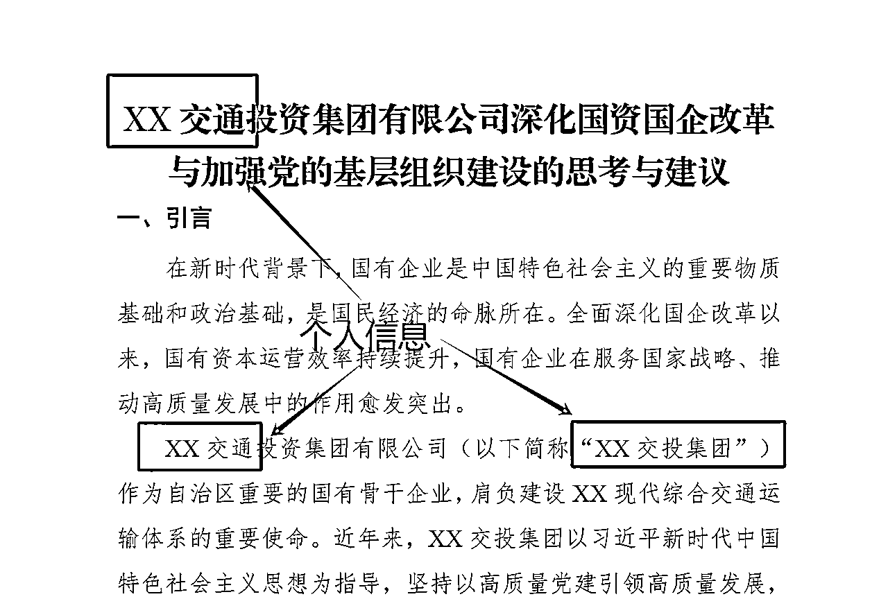
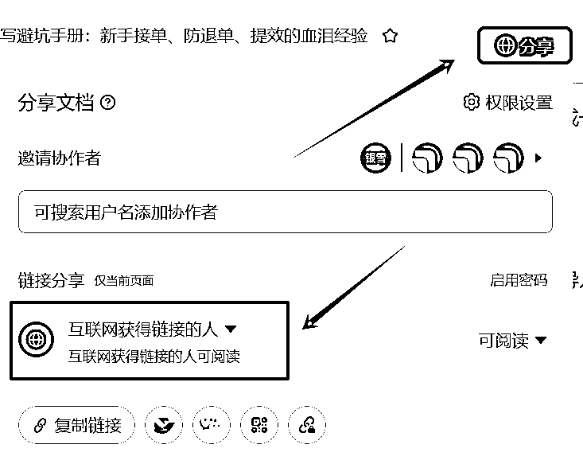
那么问题来了，可能对于我们群里的小伙伴来说，大多数人还是新手，手上没有那么多案例，怎么写呢？
（1）乖乖的跟着航海手册去实操，把作业当成自己的案例保留下来。
（2）一条野路子，去小红书找优秀的案例，先暂时当成自己的案例。
如果接到这个类型的单子，就按着 找对标拉齐认知→用AI写稿→改稿 边学边写，只要不是太急的单子，基本上都能完成。
这样我们写了单子之后也就有了自己的案例，就可以去把小红书的替换下来。
可能有的小伙伴会担心被客服发现。
但是客服也就很快的看一下，只是看你稿子质量是否过关，不会去验证这个稿子是不是你写的。除非你抄到他的稿子，但这个概率实在太小了。
★注意！这两条路一定是要一起进行的！一条让你快速开始，看到正反馈;另一条我们也要快速补齐自己。
不是说有作品集就万事大吉了，最终客户也是要看我们自己写出来的内容。
tips：
我们在其他平台找到的优秀案例有可能是图片的形式没有办法复制，有水印/手写/旁边有笔记不容易提取文字。
这里有一个小技巧，就是可以让AI帮我们提取文字，这样就会提取到原本的内容，不会受影响。
【提示词】：请你帮我把附件图片的原文提取出来，不需要笔记部分
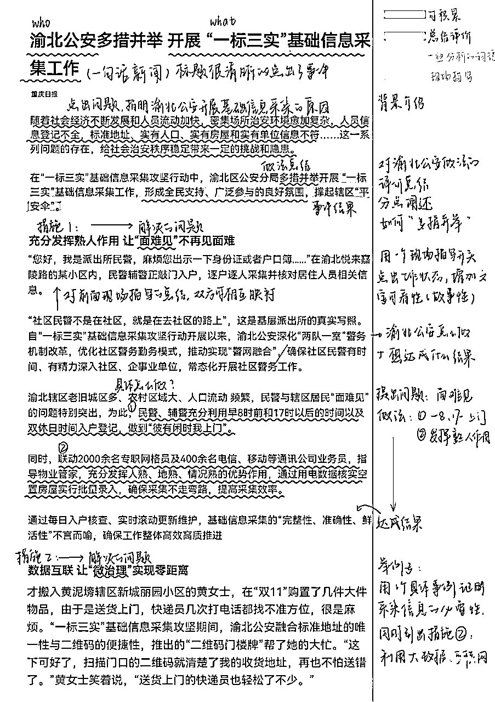
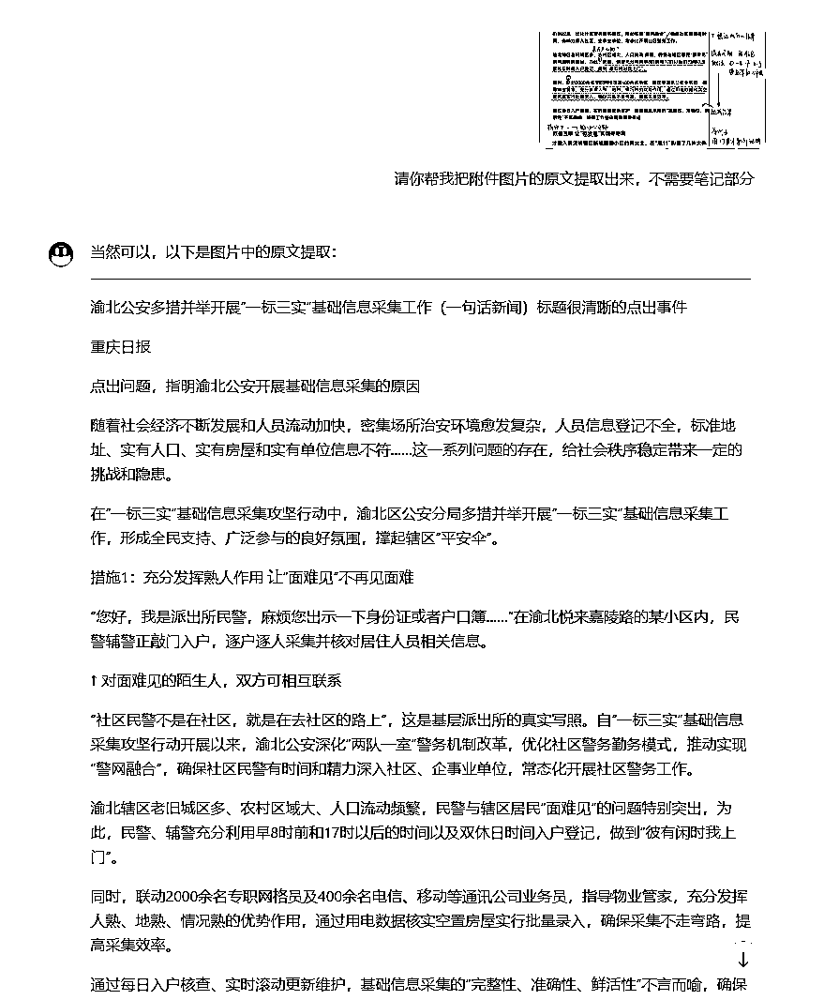
这个步骤比较简单，像一些国产的AI都可以达到这个效果，我一般用kimi。
同理，我们在写单子的时候如果有需要图片转表格的形式，也可以让AI来帮我们完成。
【提示词】：请你帮我把附件内容做成excel的形式，以markdown的形式发给我。
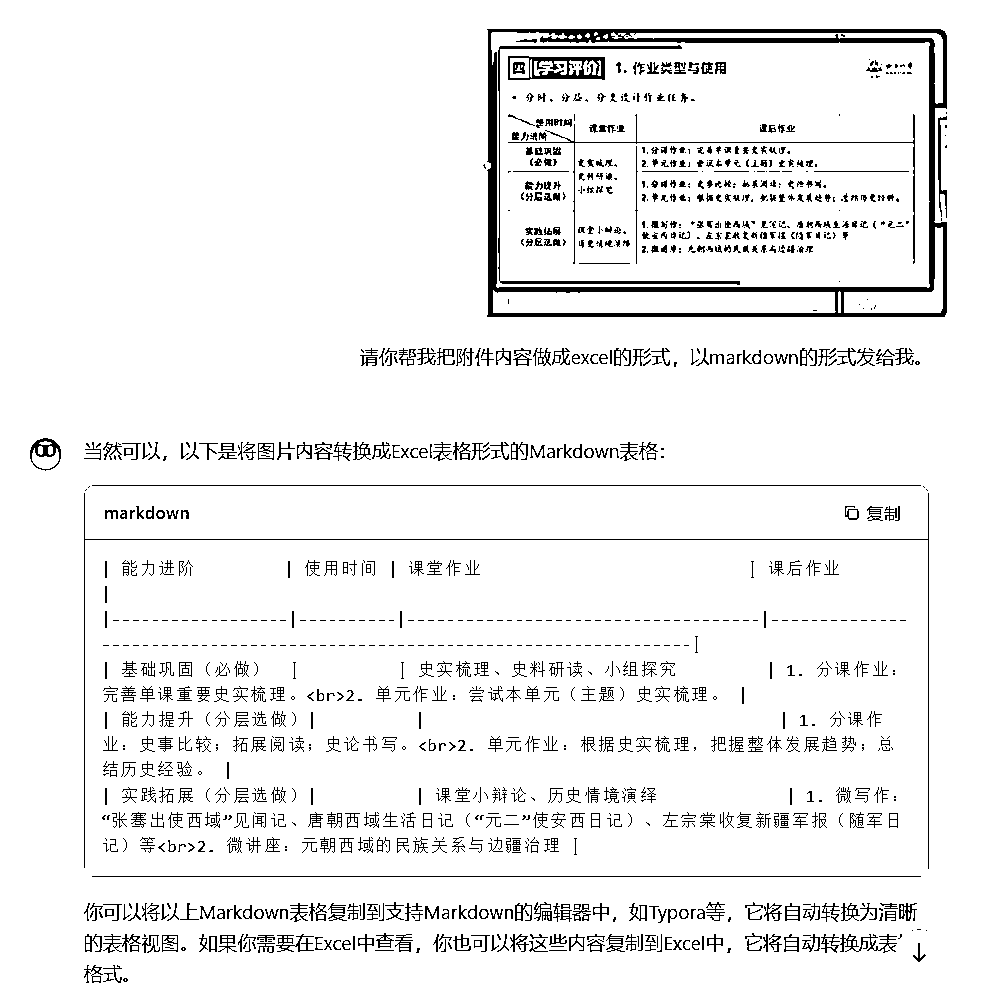
再用 markdown转excel在线工具 https://tableconvert.com/markdown-to-excel，直接复制粘贴到excel就可以啦
作品集可以做得丰富一点，可以去淘宝或者闲鱼上搜，就看它文案里有的。一些比较简单的文本都可以去写，如果会一点ppt的话，也可以放文字作品和ppt作品两部分。
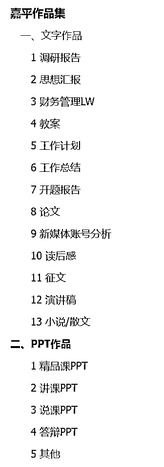
后面写的单子多了，也可以根据自己的情况慢慢的去加。
这里我们放作品集主要是为了让客服觉得我们很有经验。有经验才敢放心去用我们。
我们加到淘宝派单群后，如果在群里看到还比较满意的单子，就去私聊客服
【话术】：你好，我想接你刚刚发的×××单子，这是我的作品集~期待长期合作！https://（飞书链接）
客服1:接到了她的单子，而且后面合作的还比较好，这个客服经常喂单，基本上不用自己去找了。
平常和客服沟通可以嘴甜一点，毕竟客服也不想天天到处找人接单。77如果是合作的好，相处的舒服，客服肯定是优先派单给熟人的。
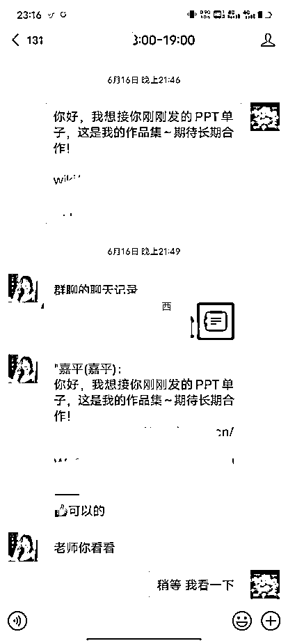
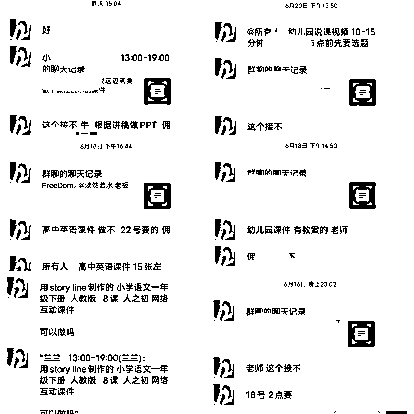
客服2：没接到第一个单子，但是后面又给我派了单。
但是和这个客服相处的不舒服，感觉她不作为，之前那个单还没结算。
★在客服筛选我们的同时，我们也要筛选客服。一个负责任的客服真的能让你省很多事情，专心写单子。
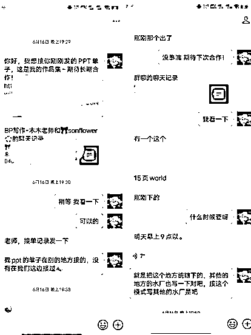
客服3：没有接到单，他要接单记录，但是我已经很久没在这边写了，不太清楚他们这边的规则。
但是没关系，客服那么多，这个不行就换一个。
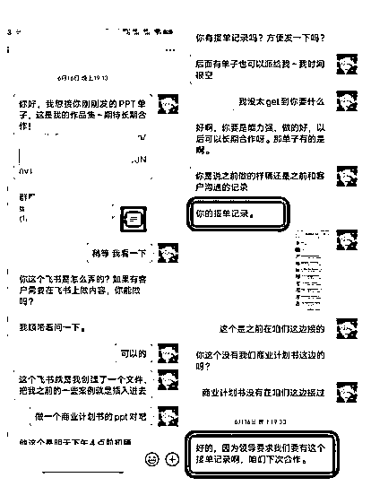
这个方法也不是所有客服的单都能接到，我在这个过程中也被拒绝过。
但是只能说比之前单纯的去问一句接到单的概率大了很多。
被拒绝是太正常不过的事情了，一定不要灰心！
在加淘宝群的时候，我曾经有一个误区。我一直觉得自己的单子不够多，是因为加的淘宝群不够多。然后我就疯狂的去淘宝问，也加了挺多企业微信。但是后面我发现，其实最后也只是在一两个淘宝群里接单。
我想说的是，加淘宝群只是你在不断的筛选哪个淘宝群比较靠谱，哪个淘宝群的价格更高。
但在筛选过后一定要聚焦。聚焦到某一个群，聚焦到某一个或几个客服。
我们的精力是有限的，没有办法盯着很多群来回切换。
一旦有几个一有单子就给你派的客服之后，你是可以把很多的注意力放在写单子这件事情上，就不用一直去盯着群，从一堆低价单里再花时间筛选。能很大程度上提升效率。
在跟客户沟通完需求之后，一定要跟顾客确认一下，这个需求是否理解的正确。避免你这边单子写完了顾客说要大改。
我们可以采用自己总结的形式，也可以合并转发顾客的聊天记录。
（1）需求比较复杂，有很多个文件的那种，可以是转发聊天记录去确认。
（2）但是需求比较少的话，我的建议还是自己去总结一下，提炼一下顾客的需求，跟他去确认。
在我们用AI写的过程中也是要去提炼需求的，所以这一步并不是多做的。
如果文章很长的话，要跟顾客去确认大纲！
如果是做ppt的话要提前跟顾客确认ppt的风格或模板
确认完之后要做2-3页样稿跟他确认。如果是淘宝单的话，一定要出现“样稿满意”或者“满意继续制作”这样的字眼。
我最近就踩了一个这样的坑
我熬夜写了一个ppt单子，但是最后客户退单了
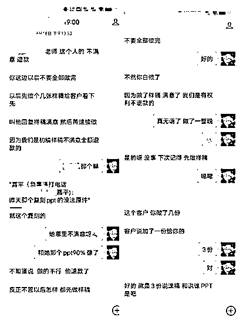
后面在我复盘的时候，我发现这个有很大概率是会出问题的
（1）急单不要轻易去接。这个单子太急了，当天晚上10点多接到第2天早上六七点就要
（2）一定要确认样稿。这是根据视频去复刻一个ppt，我当时想着这个复刻ppt不就是做成他那个视频里的样子嘛，就没有做样稿跟他确认。也正是因为觉得不难，所以接了这个急单
（3）水印一定要加密一点，ppt最好合并成一张，图小他想用也用不了。我是转成pdf之后加的水印发给他的，可能会有一些偷稿的嫌疑，但是我想不明白，这可以怎么用
关于水印这一方面，之前圈友有做一个把ppt合并在同一页上的工具，这样对于ppt来说就会安全很多
就拿一篇3000字的稿子来说，我们可能用AI半个小时就写完了，再修改一下，可能一个小时也是能出来的。
但是不要一个小时就发给顾客了。手敲的话1000字要用半个小时，而且这是一直敲的情况。很多单子你是要去搜集资料的。这个时间也要算上。
如果你很快的给客户交了稿。一是相当于直接了当的告诉了顾客，我们是用AI写的。二是人性就是这样的，你发的太快了，会让他觉得自己的钱花的不值。哪怕东西是一样的，但是你花的时间少了，他就是会觉得不值。尤其是淘宝单收顾客的钱多。
可以发带水印的截图或者是截半屏，水印在不影响看内容的情况下，尽量小而密！
不要去挑战人性！你如果买一个东西还没有花钱就拿到了，你也不会想付钱的！
tips:可以把文件转图片型的PDF，转了之后再加水印，这样就算顾客想提取文字，也不容易提取。
最后我想说很重要的一点，一个单子不能代表所有！
有的新手可能在新手村的时候会遇到特别离谱的客户，让你疯狂的改单子，或者是写完单子又以各种各样的理由要退单。
这些在写单子的过程中都是有概率发生的，而且你写的单子越多，这种事情发生的也越多。
但是新手可能在刚接触这个行业，还没有建立起自信心的时候，遇到这种事情可能就被打击到了。
再坚持坚持，这个赛道一定能帮你拿到结果！这个项目是我最开始尝试的项目，也是我又去尝试了那么多之后，还是觉得这个最容易看到结果，见钱最快！
在深耕这个赛道的过程中，你一定会遇到很多治愈你的客户！
以上就是我所有的分享!我们一起加油冲冲冲！各自努力，顶峰相见~